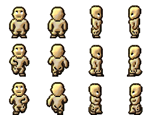
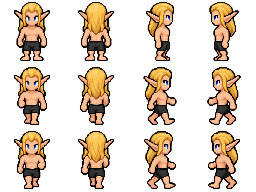

The current remastered game maps Elf to Human.dmi. This shows its body layer before separate hair or other overlays.

Selected source: the approved GOA-style sprite used by the equipment-rig preview. Native body cells are 64×64. This is separate from the current game's body asset.

Decision: use the approved blond GOA Elf below. The current rig now adds masked hidden surfaces to that source; the older game body above is retained only for comparison.
Back to rig preview